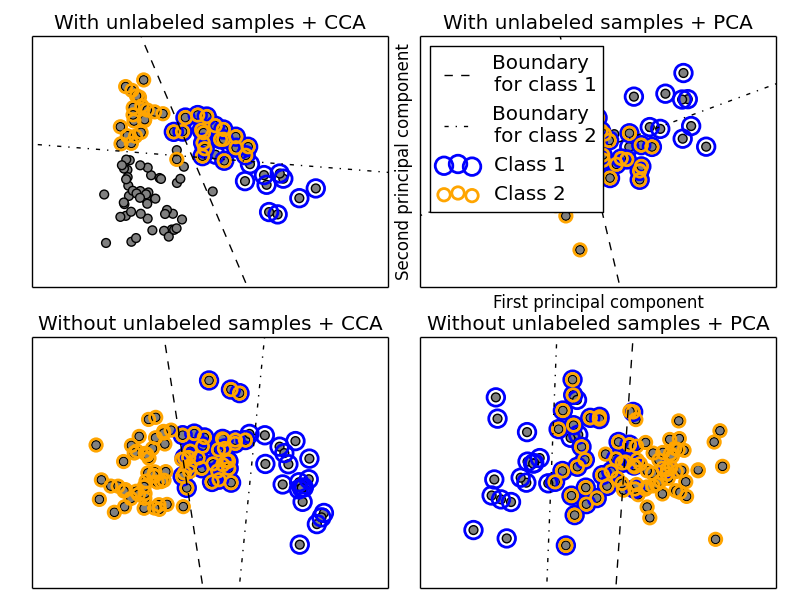

Multilabel classification¶
This example simulates a multi-label document classification problem. The dataset is generated randomly based on the following process:
- pick the number of labels: n ~ Poisson(n_labels)
- n times, choose a class c: c ~ Multinomial(theta)
- pick the document length: k ~ Poisson(length)
- k times, choose a word: w ~ Multinomial(theta_c)
In the above process, rejection sampling is used to make sure that n is more than 2, and that the document length is never zero. Likewise, we reject classes which have already been chosen. The documents that are assigned to both classes are plotted surrounded by two colored circles.
The classification is performed by projecting to the first two principal components found by PCA and CCA for visualisation purposes, followed by using the sklearn.multiclass.OneVsRestClassifier metaclassifier using two SVCs with linear kernels to learn a discriminative model for each class. Note that PCA is used to perform an unsupervised dimensionality reduction, while CCA is used to perform a supervised one.
Note: in the plot, “unlabeled samples” does not mean that we don’t know the labels (as in semi-supervised learning) but that the samples simply do not have a label.
Python source code: plot_multilabel.py
print(__doc__)
import numpy as np
import matplotlib.pylab as pl
from sklearn.datasets import make_multilabel_classification
from sklearn.multiclass import OneVsRestClassifier
from sklearn.svm import SVC
from sklearn.preprocessing import LabelBinarizer
from sklearn.decomposition import PCA
from sklearn.cross_decomposition import CCA
def plot_hyperplane(clf, min_x, max_x, linestyle, label):
# get the separating hyperplane
w = clf.coef_[0]
a = -w[0] / w[1]
xx = np.linspace(min_x - 5, max_x + 5) # make sure the line is long enough
yy = a * xx - (clf.intercept_[0]) / w[1]
pl.plot(xx, yy, linestyle, label=label)
def plot_subfigure(X, Y, subplot, title, transform):
if transform == "pca":
X = PCA(n_components=2).fit_transform(X)
elif transform == "cca":
# Convert list of tuples to a class indicator matrix first
Y_indicator = LabelBinarizer().fit(Y).transform(Y)
X = CCA(n_components=2).fit(X, Y_indicator).transform(X)
else:
raise ValueError
min_x = np.min(X[:, 0])
max_x = np.max(X[:, 0])
min_y = np.min(X[:, 1])
max_y = np.max(X[:, 1])
classif = OneVsRestClassifier(SVC(kernel='linear'))
classif.fit(X, Y)
pl.subplot(2, 2, subplot)
pl.title(title)
zero_class = np.where([0 in y for y in Y])
one_class = np.where([1 in y for y in Y])
pl.scatter(X[:, 0], X[:, 1], s=40, c='gray')
pl.scatter(X[zero_class, 0], X[zero_class, 1], s=160, edgecolors='b',
facecolors='none', linewidths=2, label='Class 1')
pl.scatter(X[one_class, 0], X[one_class, 1], s=80, edgecolors='orange',
facecolors='none', linewidths=2, label='Class 2')
plot_hyperplane(classif.estimators_[0], min_x, max_x, 'k--',
'Boundary\nfor class 1')
plot_hyperplane(classif.estimators_[1], min_x, max_x, 'k-.',
'Boundary\nfor class 2')
pl.xticks(())
pl.yticks(())
pl.xlim(min_x - .5 * max_x, max_x + .5 * max_x)
pl.ylim(min_y - .5 * max_y, max_y + .5 * max_y)
if subplot == 2:
pl.xlabel('First principal component')
pl.ylabel('Second principal component')
pl.legend(loc="upper left")
pl.figure(figsize=(8, 6))
X, Y = make_multilabel_classification(n_classes=2, n_labels=1,
allow_unlabeled=True,
random_state=1)
plot_subfigure(X, Y, 1, "With unlabeled samples + CCA", "cca")
plot_subfigure(X, Y, 2, "With unlabeled samples + PCA", "pca")
X, Y = make_multilabel_classification(n_classes=2, n_labels=1,
allow_unlabeled=False,
random_state=1)
plot_subfigure(X, Y, 3, "Without unlabeled samples + CCA", "cca")
plot_subfigure(X, Y, 4, "Without unlabeled samples + PCA", "pca")
pl.subplots_adjust(.04, .02, .97, .94, .09, .2)
pl.show()
Total running time of the example: 0.32 seconds ( 0 minutes 0.32 seconds)